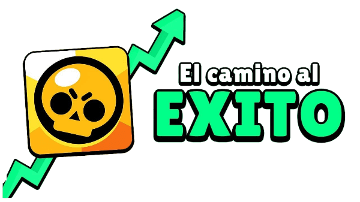
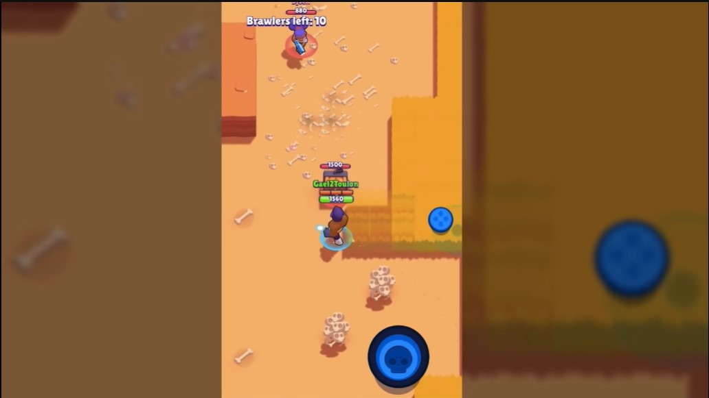
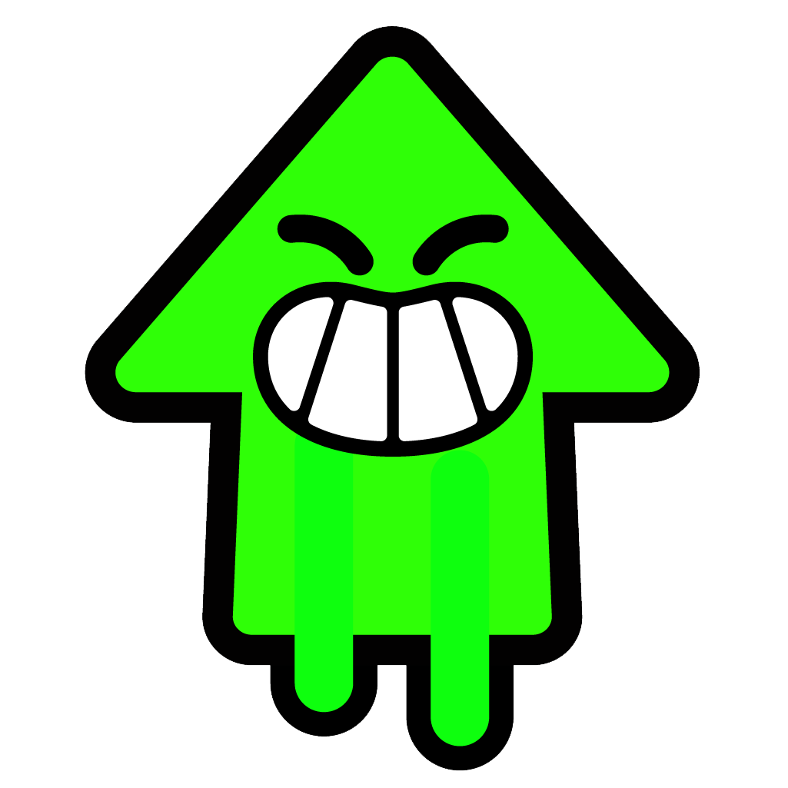
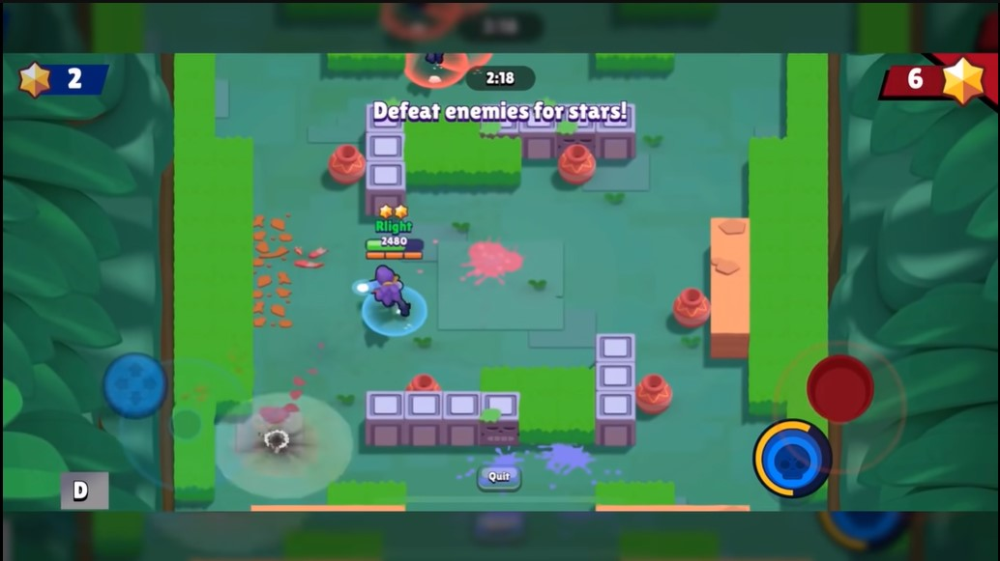
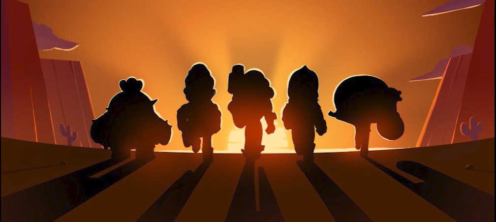
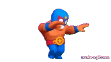

¿Que és Brawl Stars?
Brawl Stars es un juego de acción multijugador en tiempo real creado por Supercell, conocida por otros juegos móviles como Clash Royale, Clash of clans, Hay Day entre otros más. Brawl Stars ofrece varios modos de juego como supervivencia, atrapagemas, balón brawl, atraco y muchos más. Los jugadores pueden seleccionar entre una variedad de personajes llamados "Brawlers". Cada Brawler tiene habilidades únicas y un ataque especial conocido como "Super", los jugadores pueden escoger entre 85 brawlers diferentes hasta la fecha. Brawl Stars se actualiza regularmente con nuevos Brawlers, mapas y modos de juego. Puedes personalizar a tus Brawlers con skins especiales y efectos visuales. Los desarrolladores escuchan activamente los comentarios de los jugadores para mejorar el juego. Participar en torneos y competiciones ofrece oportunidades para demostrar tus habilidades. Brawl Stars está disponible en múltiples plataformas, incluidos dispositivos móviles y tablets. Su accesibilidad y diversidad de contenido lo hacen adecuado para jugadores de todas las edades.
¿Como empezó Brawl Stars?
Supercell como toda buena empresa siempre busca superarse y ganar más. En el año 2017, la empresa pasaba por un gran momento. Clash of Clans y Clash Royale eran jugados por millones de personas alrededor del mundo. Sobre todo este último. Clash Royale le supuso a la compañía finlandesa un beneficio de 810 millones de dólares, siendo que habían logrado generar 2,000 millones de dolares con dicho juego.
Fue en pleno auge de este juego que Super cell decidió iniciar el desarrollo/públicacion de Brawl Stars, dirigido por Jon Franzas, uno de los CEO de la empresa. Brawl Stars juego que se alejaba completamente de todo lo que había estado haciendo la compañia hasta la fecha. Mientras todos sus grandes exitos habían sido del genero de estrategia, super cell decidió apostar por un juego en acción en timepo real.
El juego en su primera salida, en julio del 2017, únicamente salió en unos pocos paises del mundo, practica muy común en la empresa. Durante sus tres primeros meses el juego no recibió actulizaciones relevantes y tuvo que pasar esos meses con el mismo contenido. El juego contaba con únicamente con catorce personajes: Shelly, Nita, Colt, Jessie, Bull, Brock, Dynamike, Boo, El Primo, Barley, Poco, Rico, Mortis, Spike y Crow. También contaba únicamente con tres modos de juego: Supervivencia, atraco y caza estelar.Aparte de eso contaba con consumibles que duraron muy poco dentro del juego.
Pasados estos tres meses comenzaron a meter unos pocos atuendos, un nuevo modo de juego que es balon brawl, los clubes y tres brawlers nuevos Pam, Piper y Tara. Aunque empezaron a actualizar el juego los jugadores no estaban nada contentos con el juego. Consideraban que la interfaz y jugabilidad del juego eran tedisosos. La jugabilidad consistía en dar toques en la pantalla a la dirección donde querías moverte y con la pantalla completamente en vertical. El juego iba tan mal que incluso se llegaba a pensar que no se iba a lanzar a nivel global. Hasta que el 8 de marzo del 2018 comenzarian los cambios significativos que comenzarian a salvar el juego.
Brawl Stars toma forma!
El 8 de marzo del 2018 la desarrolladroa comunicó a los jugadores que el juego iba a dejar de jugarse en vertical y pasaría a ser totalmente en horizontal y la movilidad dejaria cambiaría de toques a la pantalla a un joystick. Estos son cambios muy importatantes, ya que hasta el día de hoy son caracteristicas imprescindibles del juego. Fuera de lo que uno podría pensar, este cambio no fue bien recibido por los jugadores ya que el juego se sentía raro, era totlamente diferente. A pesar de los malos comentarios Supercell siguió con el desarrollo del juego. Ya le habían metido demasiados millones.
| Antes |  | Después |
|---|
A partir de este cambio el juego pasó por su peor momento sin dudas, era un cambio necesario pero nada bien recibido. La poca comunidad que habían llegado a juntar decidió dejar el juego por el cambio radical que sufrío. Durante los siguientes meses el juego solo tuvo cambios de balance, es decir cambios a los personajes del juego. En este punto tan bajo del juego, se comenzó a tener dudas si se lanzaría a nivel global.
En el mes de marzo del 2018 llegó una nueva actualización al juego. La actualización mejoraba animaciones dentro del juego para que fuera más fluido y tener una mejor exeperiencia a la hora de jugar. El 23 de mayo de 2018, nuevos cambios se añadieron al juego. Se añadieron a los brawlers Penny y Frank, además de un nuevo modo de juego, Supervivencia dúo. El juego pasaba por un momento tan bajo que añadieron la opción de ganar recursos a cambio de ver anuncios dentro del juego. También se añadió la funcionalidad de tener amigos dentro del juego y poder espectar sus partidas. Se notaba que le estaban metiendo empeño a mejorar el juego. Durante los siguientes meses la desarrolladora siguió intentando atraer nuevos jugadores, con cosmeticos y recompensas gratuitas.
El 21 de junio de ese mismo año un gran cambió llego al juego. El juego se puso disponible para dispositivos Android, pero este es un cambio que a los ojos de la comunidad ya era demasiado tardío. Los cuatro siguientes meses el juego paso por un momento de sequía, ningún contenido nuevo llego al juego. Solo cambios de balance. El juego parecía que estaba abandonado por los desarrolladores. A partir del 7 de noviembre de ese año, todo contenido de las fuentes oficiales del juego comenzarón a ser eliminados. Parecía que el juego llegaba a su fin. Después de tanta especulación la desarrolladora publicó la siguiente imagen...
¡No era una despedida, solo un hasta luego!
Bajo el lema de "Necesitamos hablar..." Brawl Stars anunció el 14 de noviembre de 2018 que en diciembre de ese mismo año el juego estaría disponible a nivel global. Esto fue un paso valiente y necesario de la compañia para que el juego siguiera creciendo. Este cambió fue muy bien recibido, no solo por la comunidad sino por los nuevos potenciales jugadores. El juego desde este anunció recibió cinco millones de pre-registros. El 12 de diciembre salió el juego a nivel mundial. Para muchos jugadores este fue el verdadero inicio del juego, ya nada tenía que ver con su primera versión.
Supercell lo iba a dar todo con Brawl Stars siendo que todos los meses habría nuevo contenido; nuevos brawlers, nuevas skins y animaciones que tanto le gusta a la comunidad.
- Novedades 2019
Enero: Tematica navideña, emojis y skins de navidad
Febrero: Genio, remodelación de balon brawl y nuevos mapas
Marzo: Carl y Asedio como nuevo modo de juego
Abril: Rosa, remodelo de Boo y nuevos items de personalización
Mayo: Bibi
Junio: Tick, puntos estelares y implementación de segundas habilidades estelares
Agosto: 8-bit y remodelo de Piper
Septiembre: Sandy, remodelo de El Primo, caza estelar solitario y takedown como nuevos modos de juego
Octubre: Emz, bioma de Halloween y power play como nuevo modo de juego
Noviembre:Colaboración con Brown&Friends
Diciembre: Max y Bea como nuevos brawlers, bioma de piratas y nuevo modo de juego "robo de regalos"
- Novedades 2020
Enero: Mr P
Marzo: Jackie, remodelo de Darryl y implementación de gadgets
Abril: Sprout y primer Supercell Make
Mayo: Gale, implementación de las temporadas y de los pases de temporada. Nueva calidad de brawler cromatico y nuevo modo de juego, zona restringida.
Junio: Nani y lanzamiento de Brawl Stars a China
Septiembre: Collette y un minijuego dentro del juego
Octubre: Amber y el creador de mapas
Noviembre: Lou
Diciembre: Byron y Edgar
- Novedades 2021
Enero: Stu y Ruff, Competitivo como nuevo modo de juego y implementación del segundo gadget
Abril: Belle y Squeak y noqueo como nuevo modo de juego
Junio: Buzz y Griff, dos modos de juego nuevos, volley brawl y basket brawl
Agosto:
Ash y supervivencia plusNoviembre: Lola, club league y implementación de los refuerzos y el nivel 11 a los brawlers
Diciembre: Grom
- Novedades 2022
Enero: Fang y un nuevo modo de juego, duelos
Marzo: Eve
Abril: Jannet y Bonnie
Junio: Otis y un remodelo de Penny
Que repetitivo, ¿Verdad?
Para este momento se nota una clara tendencia en el juego, la monotonia se había hecho presente en cada actualización. A los ojos de los jugadores todo el rato era lo mismo, un brawler nuevo y un modo de juego nuevo. No habían apenas mecanicas nuevas o algo que logrará captar la atención de nuevos jugadores ni de retener la atención de los jugadores habituales, que se veían atraídos por juegos diferentes. A causa de la perdida de jugadores el equipo de Brawl Stars tenía que darle la vuelta a la situación como ya lograron hacerlo con aterioridad.
El plan de acción de Brawl Stars para los próximos meses se ha implementado en su totalidad después de escuchar a la comunidad. Tras lo presentado en la Brawl Talk, Supercell ha revelado al completo el roadmap con un enfoque exhaustivo que ha revitalizado el juego, posicionándolo de nuevo en lo más alto. Entre los cambios destacan un rework completo de los refuerzos, una nueva manera de desbloquear brawlers específicos, un modo historia y muchas otras novedades resumidas aquí.
Rediseño de los refuerzos: La comunidad había expresado su preocupación por los gears. Aunque inicialmente no era una prioridad en 2022, se ha convertido en un objetivo prioritario. Ahora, el coste para fabricar refuerzos y subir niveles se ha reducido en un 50%. Además, en la próxima actualización se reducirán aún más los costos de chatarra y fichas necesarias para subir de nivel.
Se añadió una nueva función al gameplay, las hipercargas son potenciadores para las habilidades de nuestros personajes favoritos y una forma de fomentar subir a nuestros brawlers al nivel máximo.
Reembolso en refuerzos: Otro cambio significativo ha sido el reembolso de toda la chatarra y fichas de refuerzo relacionadas con los gears eliminados en muchos brawlers. Este reembolso se ha realizado en monedas de oro, el recurso más valioso de Brawl Stars, que también será fundamental para desbloquear refuerzos en el futuro.
Selecciona el brawler a desbloquear: Entre las novedades que superan el mes de octubre, destaca la posibilidad de elegir qué brawler desbloquear primero al abrir cajas, lo cual elimina la aleatoriedad y proporciona un propósito claro para los jugadores. Además, se podrá saber exactamente cuándo se desbloqueará el personaje deseado, según los desarrolladores.
Camino de maestrías: Otro aspecto nuevo es un sistema de progresión para cada brawler, permitiendo que los jugadores lleven a su personaje al siguiente nivel. Este sistema establece objetivos y recompensas, similar a las maestrías en Clash Royale, y ayuda a perfeccionar el estilo de juego.
Sistema de reportes: Brawl Stars ha implementado un sistema de reportes oficial, permitiendo que los jugadores denuncien conductas inapropiadas en el juego. Aunque su funcionalidad completa irá más allá de octubre, el botón de reportar ya está presente y recopilará datos para analizar el trabajo necesario.
Matchmaking mejorado: Aún en una etapa temprana, Supercell ha prometido mejoras en el matchmaking para optimizar la jugabilidad en los próximos meses.
Coleccionables mejorados: En respuesta a las críticas por la repetición de premios en los desafíos, el juego ha introducido nuevas formas de obtener coleccionables y más opciones para mostrarlos con los blines, la eliminiación de las megacajas y la introducción de los star drops.
Novedades sociales: Se han añadido mejoras sociales para facilitar la invitación de amigos a partidas y para compartir jugadas directamente en redes sociales sin necesidad de herramientas externas ni descargas de video.
Todos estos cambios han sido realizados desde septiembre del 2022 hasta el día de hoy. En todo este tiempo se han añadido nuevos brawlers: Gus, Sam, Buster, Mandy, Chester, Gray, RT, Maisie, Doug, Cordelius, Pearl, Kit, Charlie, Kit, Larry y Lawrie, Angelo, Melody, Lily, Draco, Berry, Clancy, Moe y Kenji. Para nuestra desgracia aún quedan muchas novedades más para el futuro. Brawl Stars me está arruinando la vida! 😊
 Braian Arancibia
Braian Arancibia Aya El Baarar
Aya El Baarar